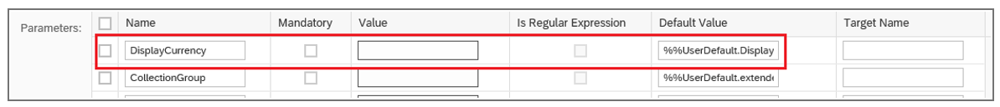

Navigation to an App (Inbound Navigation)
Navigation to an App (Inbound Navigation)
This topic describes the key features when navigating into an SAP Fiori elements template, that is, inbound navigation.
When navigating to an SAP Fiori elements application that has a filter bar (with
the exception of the overview page), the incoming context is processed and the filter bar populated. This overrides the default
variant/filter settings of the SAP Fiori elements application.
Handling Incoming Filters
An incoming value for a field that is also a filter field in the entity set of the target application is applied to the filter field.
If the field is not yet seen in the filter bar, upon finding a value for the field from the incoming context, the filter field is
brought into the visible area in the filter bar.
Handling Default Values from SAP Fiori launchpad (FLP)
When dealing with incoming navigation, in addition to the navigation context passed by the source application, there are also other
values coming from the FLP, like the FLP target mapping default values. The FLP target mapping can have parameters to which you can assign default
values. These default values can also point to the FLP user default
values.

Handling Default Values from FLP
-
When you navigate into a list report app via intent-based navigation: Only those values that are added by the FLP via the standard target mapping mechanism are
considered.
-
When you navigate into a list report app via a static FLP
tile (with no navigation context): If there is no user default variant available, then the FLP default values as passed via the target mapping mechanism
are considered.
-
When you navigate into a list report app via a dynamic tile (for example an SAP Smart Business tile, where the
navigation context is passed): In this case, there is a special handling for DisplayCurrency. For all
other fields, the FLP default values are ignored (except
those that are added by the FLP via the standard target
mapping mechanism).
Deep Linking
Navigation to the app uses deep linking. For more information, see Navigation in the SAP
Fiori Design Guidelines and go to the Deep Links section.
You need the SAP Fiori launchpad for this type of navigation. For a stand-alone app,
you need to change the links in the annotations as required.
For the SAP Fiori launchpad, the configuration steps for Intent-Based
Navigation are also relevant since it's the same mechanism.
If the source app provides all the key fields in the URL to uniquely identify an object page (or subobject page) record, then this will
be directly opened instead of the list report or analytical list page. Otherwise, the list report or analytical list page will be
opened.
Deep Linking to Object Pages
Applications can trigger deep linking to object pages by providing all technical keys corresponding to the list report entity set.
Depending on the value of the IsActiveEntity technical key, the result is:
-
either the active or draft page is loaded
or
-
if the draft is requested from the URL and is not accessible for the user, the user sees an error page
Technical keys are part of the metadata and are configured in the back end.
Sample Code
Hidden
<EntityType Name="SalesOrderManage">
<Key>
<PropertyRef Name="ID"/>
<PropertyRef Name="IsActiveEntity"/>
</Key>
</EntityType>Technical keys are passed in the URL that triggers deep linking:
…?ID=11111111-aaaa-bbbb-cccc-ddddeeeeffff&IsActiveEntity=true
Deep Linking to Subobject Pages
Applications can also trigger deep linking directly to the n-th level of a subobject page. Applications must provide the manifest
setting to indicate that deep linking is allowed for the subobject level. For more information, see the version-specific sections
in this topic below.
-
To directly load the n-th level subobject page, allowDeepLinking has to be true for all the n levels
of the subobject page.
To be able to directly load the 2nd-level subobject page,
allowDeepLinking has to be true for the 1st-level subobject page and the 2nd-level subobject
page.
If allowDeepLinking is false, then the last subobject page for which allowDeepLinking
is true is loaded.
If allowDeepLinking is false for the 2nd-level subobject page, but
true for the 1st-level and 3rd-level subobject page, and you provide semantic keys up to the 3rd level of the
subobject page, then the 1st-level subobject page is loaded.
We don't support deep linking for applications that are configured with parameters or mandatory filters.
Additional Features in SAP Fiori Elements for OData V2
Inbound Navigation to Subobject Pages Using Deep Linking
You can configure inbound navigation to any subobject page belonging to an app by using deep linking.
To do so, make the following settings:
In the target application's manifest, for the corresponding subobject page, set allowDeepLinking: true.
The following
example shows the
subobject page section of the
manifest.json:
Hidden
"pages": {
"navigationProperty": "to_ProductText",
"entitySet": "STTA_C_MP_ProductText",
"component": {
"name": "sap.suite.ui.generic.template.ObjectPage",
"settings": {
"allowDeepLinking": true
}
}
}
If multiple pages on the same level have this property set to
true, the entry that comes first in the manifest is used.
Navigation to any level is possible by
setting allowDeepLinking: true for each level. Note that each level needs to have the setting
allowDeepLinking: true. In the following example, the navigation goes to subobject level 3:
Sample Code
Hidden
Object Page1: {
allowDeepLinking:true,
SubObjectPage1:{
allowDeepLinking:true
SubObjectPage2:{
allowDeepLinking:true
SubObjectPage3:{
allowDeepLinking:true
}
}
}
}
-
Provide the URL parameters for navigation, as described under Configuring
Navigation.
Configuring Sort Order
If the xapp-state carries the sort orders during inbound navigation to a target list report or an analytical list
page application, the target framework reads these sort parameters from the xapp-state and applies it as the
sorting criteria to the table in the list report or the analytical list page.
Although the sorters coming from the navigation is merged with the existing sorting criteria of the table, the sorters from the
navigation context always take the priority.
The following are some of the possible scenarios:
-
If the user defined control variant exists as default with a sorter, the framework merges the navigation sorter on
priority followed by the sorter from control variant.
-
If there is no default user defined variant with sorters, the framework merges the navigation sorter on priority
followed by the sorter from PresentationVariant annotations.
-
If neither default user defined variant nor PresentationVariant is defined, the framework only uses
sorters coming from navigation.
Enabling Fullscreen Mode for Inbound Navigation in Flexible Column Layout Mode
During inbound navigation to flexible column layout application, if the navigation context points to a unique object, you can open
the object in fullscreen mode by adding the configuration mentioned here. To experience better performance, set the
"defaultLayoutTypeIfExternalNavigation": "MidColumnFullScreen" for the main objects and
"EndColumnFullScreen" for sub-objects.
Hidden
"pages": {
"ObjectPage|C_STTA_BusinessPartner": {
"entitySet": "C_STTA_BusinessPartner",
"defaultLayoutType": "TwoColumnsMidExpanded",
"defaultLayoutTypeIfExternalNavigation": "MidColumnFullScreen",
"component": {
"name": "sap.suite.ui.generic.template.ObjectPage"
"settings':{"allowDeepLinking": true
}
},
"pages": {
.....
-
If the navigation is external and flexible column layout is enabled, the flag
defaultLayoutTypeIfExternalNavigation is considered.
-
If the app is launched from SAP Fiori launchpad and flexible column
layout is enabled, the flag defaultLayout is considered.
Additional Features in SAP Fiori Elements for OData V4
Special Handling of DisplayCurrency
The incoming navigation context will only have the source application context and the target Fiori elements application first
checks for a filter bar which has a filter field containing the technical name DisplayCurrency. If there is such
a filter field, SAP Fiori elements checks for the following
conditions:
If both these conditions are fulfilled, the FLP user default values
are checked to see if there is a field called DisplayCurrency. If so, this value is used for the filter
field.
Inbound Navigation to Object Pages Using Deep Linking
Applications can also trigger deep linking to object pages by only providing all semantic keys corresponding to the list report
entity set. In this case either the draft object page instance is loaded (if a draft exists for the user) or the active object
page is loaded (if no draft exists).
Semantic keys are semantically unique keys for the entity set that is defined by the application.
Here are the annotation snippets showing the semantic key annotation:
XML
Annotation
Sample Code
Hidden
<Annotation Term="Common.SemanticKey">
<Collection>
<PropertyPath>SalesOrder</PropertyPath>
</Collection>
</Annotation>ABAP CDS Annotation
Sample Code
Hidden
@ObjectModel: {
semanticKey: [ 'SalesOrder' ]
}
define view SALESORDERMANAGE {
}CAP CDS
Annotation
Sample Code
Hidden
Common.SemanticKey : [
SalesOrder
]In addition, the manifest must have the route having the key configured for the level to which deep linking is desired.
Manifest Setting
Hidden
{
...
"routing": {
"routes": [
{
"pattern": "/yourEntity({key}):?query:",
"name": "default",
"target": "sample"
}
],
"targets": {
"sample": {
"type": "Component",
"id": "Default",
"name": "sap.fe.templates.ObjectPage",
"level": 1,
"options": {
"settings": {
"contextPath": "/yourEntity"
}
}
}
}
},
...
}Semantic keys passed in the URL that triggers deep linking:
…?SalesOrder=10025
When the application passes all the semantic keys and technical keys, then semantic keys take priority over technical keys.
Inbound Navigation to Subobject Pages Using Deep Linking
To enable deep linking for a subobject page, you need to enable it in the
manifest.json
file.
Hidden
"SalesOrderManageObjectPage":{
"type":"Component",
"id":"SalesOrderManageObjectPage",
"name":"sap.fe.templates.ObjectPage",
"options":{
"settings":{
"contextPath":"/SalesOrderManage",
"allowDeepLinking":true,
....
...
}
}
}Applications can trigger deep linking to a subobject page by providing all the semantic or technical keys for the entity sets of
the object page and semantic keys of the subobject page.
To directly load the n-th level subobject page, you need to provide the semantic or technical keys of the object page as well as
all the semantic keys of the subobject pages until the n-th level in the URL.
If you want to directly load the
3rd level of the subobject page, then you need to pass the semantic or technical keys of the entity set of the object page and
all semantic keys of all the entity sets of the subobject pages (that is, the 1st-level entity set of the subobject page, the
2nd-level entity set of the subobject page, and the 3rd-level entity set of the subobject page).
Applications must ensure that the semantic keys across the different entity sets of the subobject pages are named uniquely to
ensure the correct deep linking behavior.
Handling Incoming Filters for Navigation Entity Set Properties
An incoming value for a field that is also a filter field in the entity set of the target application is applied to the filter
field. If the field is not yet seen in the filter bar, upon finding a value for the field from the incoming context, the filter
field is brought into the visible area in the filter bar
This is also true for incoming filter values coming for navigation entity sets. Note that the fully qualified incoming name for the
navigation property must either exactly match the fully qualified property name in the target, OR there must be a match when the
leading entity set name from the incoming context is discarded.
The incoming context is "SO._PO.Status". SAP Fiori elements applies this to the first matching field in the target
application based on the following order:
-
The target application has a main entity set "SO" which has a navigation entity set
"_PO" with a "Status" filter field
-
The target has a first-level navigation entity set "SO" that has a further navigation entity set
called "_PO" with a "Status" filter field.
As with main entity set filter fields, an incoming value is also checked against a field that matches the name but
additionally has the prefix "P_" added (or removed, in cases where the incoming context has a field with the
prefix "P_", but the target field does not have this prefix).
Parent topic:
Previous:
Next: